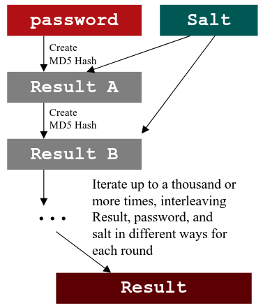

MD5 algorithm
1. The process start with password which can be of any length and a Salt(The length of the salt depends on the version of Linux or UNIX)
2. Hash password and salt together using the MD5 algorithm
3. This result is then hashed again and this process is applied iteratively a thousand times
4. The resulting password representation is stored in the password field of /etc/passwd or /etc/shadow, preceded by a $1$, followed by the salt, followed by a $ and the hashed password. The result have the following format $
id$
salt$
hashed. The length of the salt depends on the version of Linux/UNIX, in the example below we have a 64-bit salts (eight characters in length)
example: $1
$ramiBYEY
$FAgztBwuavQt/Z/BIwObU1
• SHA-256 and SHA-512 use a similar strategy mixing in the salt over multiple rounds but use a different hash algorithm (SHA-256 or SHA-512, of course) and a
different number of rounds. The default number of rounds for SHA-256 and SHA-512 for Linux passwords is 5,000 by default